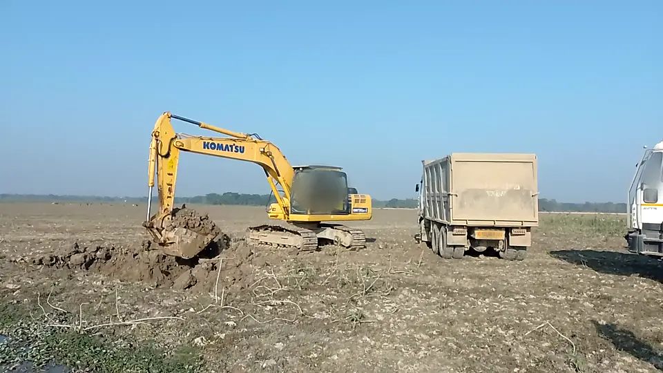

Кольцо на земле под выбранной машиной

Приём. Эллипс-ореол на земле вместо рамки: «эта машина» отмечена, картинка не перекрыта.
У нас. Кольцо лежит на земле и уходит за колёса; подпись — над машиной одной строкой.

Приём. Эллипс-ореол на земле вместо рамки: «эта машина» отмечена, картинка не перекрыта.
У нас. Кольцо лежит на земле и уходит за колёса; подпись — над машиной одной строкой.